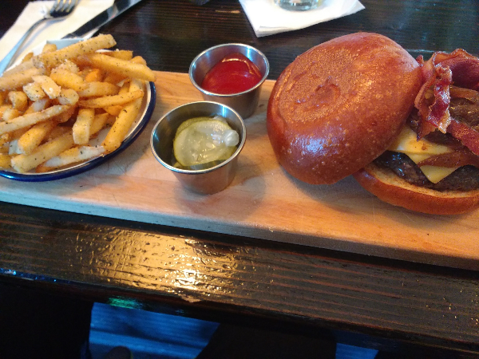

The Bronx!
Steven Greaves / Getty Images
The Bronx, “The BX”, “The Boogie Down”, “Uptown-Uptown”, “Home of Hip Hop” and most importantly MY HOME!
The Bronx is one of the five boroughs that make-up New York City and is the only borough that is not on an island. It’s located northeast of Manhattan, and is the home of 1.4 million people. It’s the home to the Bronx Zoo, NY Botanical Garden, Yankee Stadium, Woodlawn Cemetery, Edgar Allan Poe Cottage, Van Cortlandt Park, Bronx Museum of the Arts, Bronx Little Italy (Arthur Ave.), 14 colleges and universities, and so much more. Let’s not also forget the many bodegas and churches! Can never have enough of those… maybe!
I love to think the BX is centrally located because we’re right between “the city” and westchester county. Commuting back home everyday brings me a sense of getting back to reality. The smells, the sounds, the sirens. It’s “the hood” to other but for me it’s comfort, it’s familiar, it’s real.
The Bronx is a melting pot of so many races, black, hispanic, asian and white. All from different cultures and parts of the world coming together to share life, culture and food.
This site is meant to share my Bronx experiences through Food & Beer!
Beer.
Gun Hill Brewing Company

Gun Hill Brewing Company is a small microbrewery located in Williamsbridge section of the Bronx. They
opened in February of 2014 to owners Kieran Farrell and Dave Lopez with Chris Sheehan as their Brewmaster.
They were the first to bring back brewing beer to the Bronx since the 1960’s. Gun Hill Brewing Company
led the way and other breweries followed suit.
I don’t remember how I first found out about the brewery but I remember walking towards it thinking,
“what’s this doing here?”, “when did this open?”, “How long will it be
open?”
I have to admit I wasn’t always a fan of beer much less craft beer. What is craft beer anyway?
Defining it isn’t easy as beer is subjective and very much a personal experience. According to the
Colorado-based Brewers Association, craft beer must be small, independent and traditional. Just a little
history for yah.
I walk-in AMAZED that something like this even existed in my area, something new something different. I pull
up a stool at the bar and I’m greeted by the owner (yes he’s serving beer). We strike up a good
conversation about their now brewery once being a former auto-body garage (pretty cool way to repurpose a
space). We delved into how they chose their name and their own history with the Bronx.
It’s a decent sized space with tables and seats if you don’t want to sit at the bar. In the warmer
months the garage type shutter door is open and closed when it’s cold outside. There is no kitchen but
they allow you to bring in your own food. Even better!
So, enough of that! Now to the beer! Personally, I enjoy hoppy, wheat heavy and a hint of sour type beers.
Immediately, I fall in love with their staple Gun Hill IPA. Now let’s be honest they are a brewery in
an area predominantly Caribbean. So, what do you offer up those who come in looking for say… Guinness?
Try Void of Light, a dark foreign stout. What about Heineken? Try Gun Hill Gold, a session ale, light. Not
quite a Heineken but it gets the job done.
The brewery brings the community together not just through beer but through food, games and music (they showcase
local bands at events). I love this aspect of the brewery! Gun Hill Brewery is now a local staple in the community
that I don’t see going anywhere!
Check them out sometime!
Food.
Gun Hill Tavern
Gun Hill Tavern The Gun Hill Tavern is the brainchild of the Gin Hill Brewing Company and Port
Morris Distillery. They are located in the Mott Haven section of the Bronx with its neighbors being
mostly warehouses. The Gun Hill Tavern offers 8 draft lines of Gun Hill beer, cans of NYS beer &
cider, NY spirits, NY wine.
The location itself isn’t necessarily a positive for me because it’s not located close to
public transportation. Ride sharing is great but sometimes you want to be cost efficient.
I had been meaning to try The Tavern out since its opening but went their for lunch with a friend
while in the area. I drove to the location and if you plan to visit during lunch time DON’T
DRIVE! Parking is next to impossible to find.
The tavern is a decent size and can probably pack in a good amount of people during their busy hours.
During lunch it was empty and only had a few people sitting at the bar. We were greeted by the
bartender and handed our menus.
We decided to go with their tried and true Gun Hill IPA and Void of Light. We also both ordered their
signature burger with fries. The burger was cooked properly (thank goodness - I’m tired of
having over cooked burgers), well seasoned and very very juicy. I’m a lover of fries and those
were also on point.
The Tavern is definitely a place to try out for good craft beer, spirits,
wine and food. I would love to visit again during evening hours to see a different perspective.
Check them out sometime!
Bronx Ale House

I encountered the Bronx Ale House many years ago when I was looking for a local place where I could watch the game and enjoy good food and beer. It has been my go-to place ever since.
The Bronx Ale House is located on the west side of the Bronx and conveniently right by the number 1 train line. Parking in the area is tight so if you don't have to drive just don't! The atmosphere is very chill and you're welcome to pull up a seat (if one is free) or wait to be seated. The crowd is mixed with younger and older but filled with mostly locals.
Their speciality is burgers, wings and hearty sandwiches and about 16 different of craft beers on tap. There is a little something for everyone.
Since I'm such a fan, I've gone for lunch, brunch and dinner. I've yet to have a bad meal or have a bad beer. My usual order is a burger (very juicy) with fries and a heavy wheat German beer. For brunch, I stick to chicken (very tender) and waffles. During brunch, they have an interesting concoction of wheat beer, orange juice. It's their twist on mimosa but instead of champagne, they use beer. It's not half bad.
Oh yeah! They have free popcorn at no charge. It's a nice little touch if you only plan to drink and not eat.
Check them out sometime!